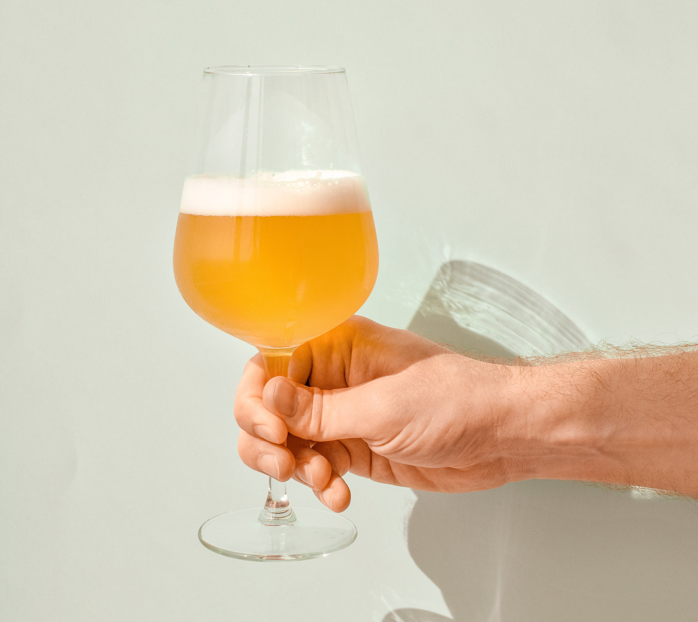

CODO'S BEER & BURGERS

Nuestras Cervezas
Aqui encontrarás una amplia selección de cervezas artesanales que abarcan desde estilos clásicos hasta creaciones innovadoras, cada una con su propio carácter y perfil de sabor distintivo. Explora nuestro menú de cervezas y déjate sorprender por la calidad, la diversidad y la pasión que ponemos en cada vaso.
Nuestras Hamburguesas
En nuestra hamburguesería, nos destacamos por utilizar la mejor carne argentina, reconocida internacionalmente por su sabor excepcional y jugosidad. Nuestras hamburguesas están elaboradas con cortes seleccionados de carne argentina, garantizando una experiencia gastronómica única y auténtica.